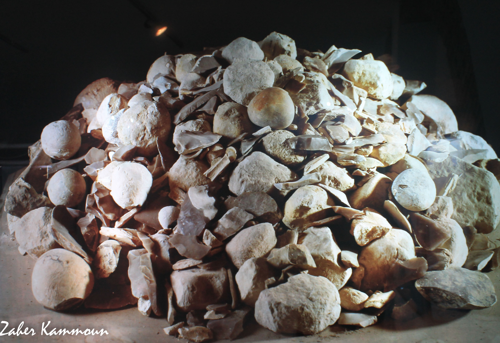
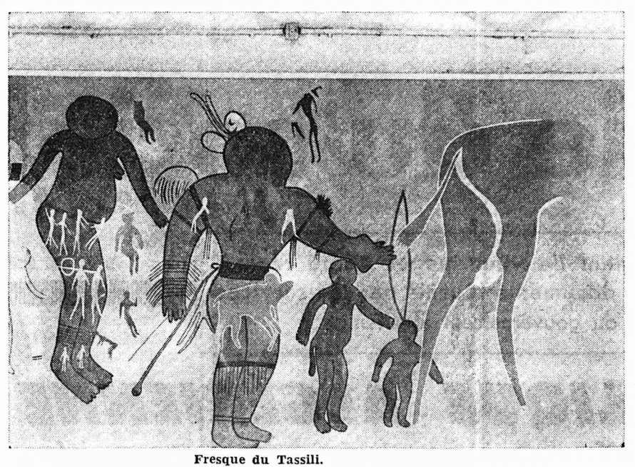
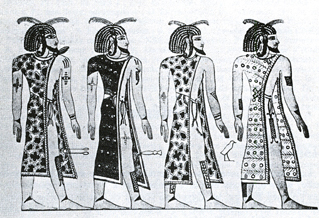
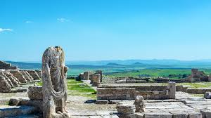
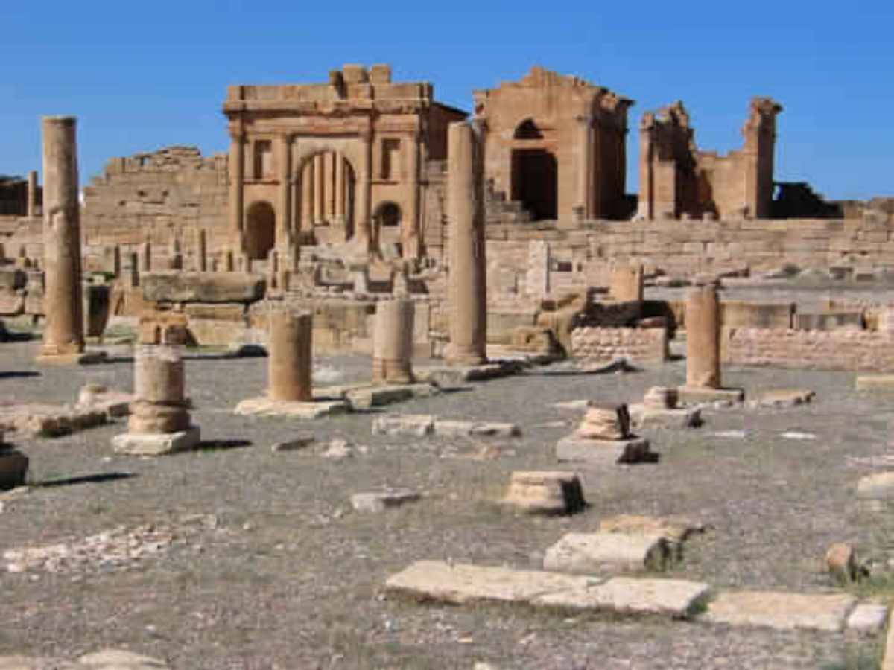
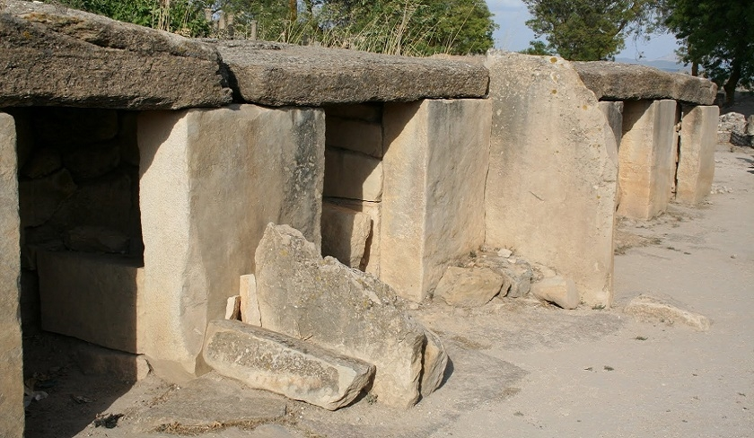
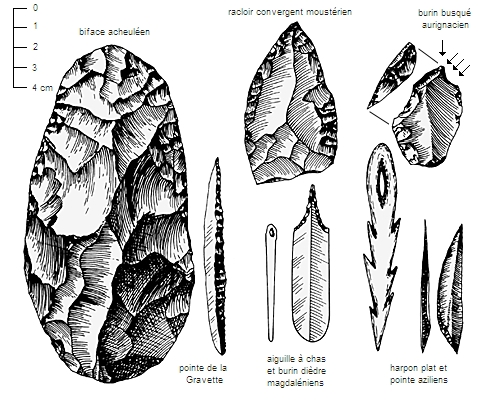
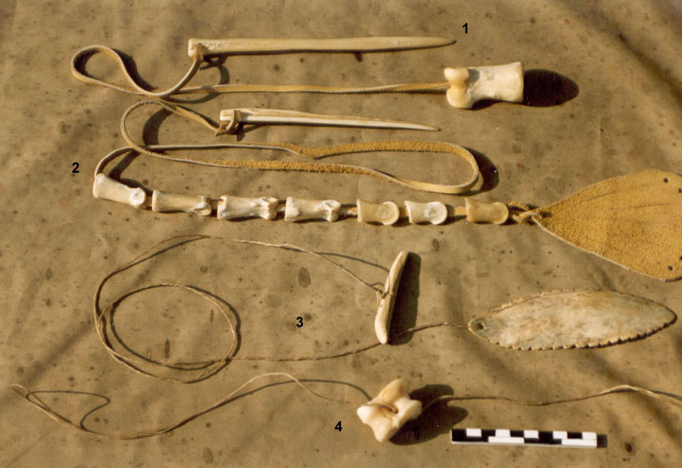
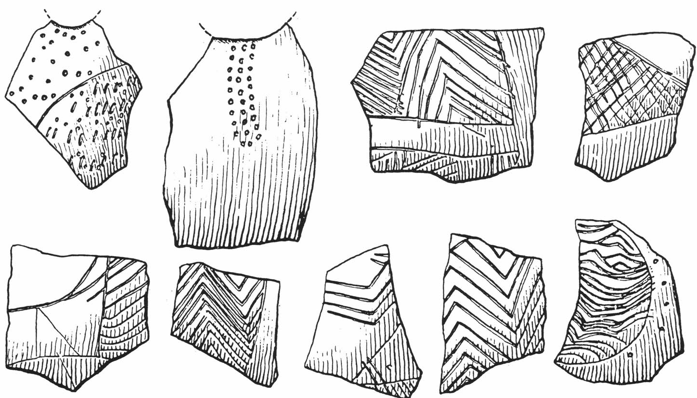
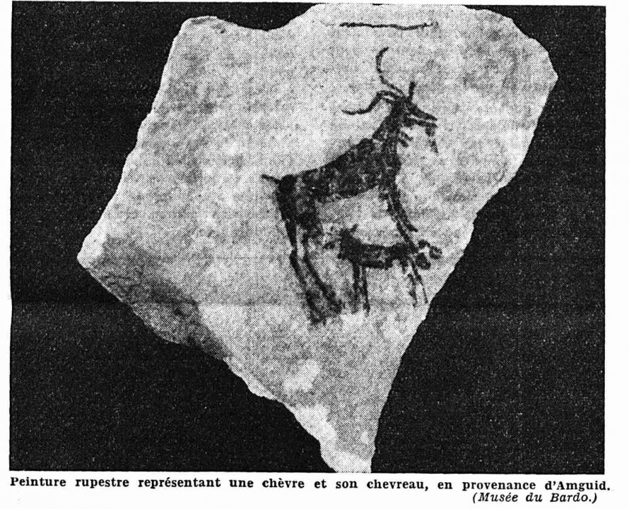

Tunisie : Mémoire des Civilisations
La civilisation capsienne : un fleuron de la préhistoire tunisienne
La civilisation capsienne est l'une des plus importantes cultures préhistoriques du Maghreb, notamment en Tunisie. Elle tire son nom de Capsa, l'ancienne Gafsa, où de nombreux vestiges ont été mis au jour. Cette civilisation s'est épanouie durant l'Holocène, entre le milieu du VIIIe millénaire et la fin du Ve millénaire avant notre ère.
Une culture riche et diversifiée

Les Capsiens étaient des chasseurs-cueilleurs particulièrement adaptés à leur
environnement. Ils vivaient dans des campements saisonniers et maîtrisaient
parfaitement la fabrication d'outils en pierre taillée, notamment des microlithes (très
petits outils) d'une grande finesse. Leur industrie osseuse était également
remarquable, avec la production d'harpons, d'aiguilles et d'autres objets en os.
L'art capsien est caractérisé par une grande diversité de motifs géométriques et
figuratifs, gravés ou peints sur des os, des pierres ou des coquillages. Ces
représentations témoignent d'une vie spirituelle riche et d'une sensibilité artistique
développée.
Une organisation sociale complexe
Les Capsiens vivaient en groupes sociaux relativement importants et organisés. Ils pratiquaient des échanges à longue distance, comme en témoignent les objets exotiques retrouvés sur leurs sites. Leur économie était fondée sur l'exploitation de ressources variées : gibier, poissons, mollusques, plantes sauvages...
Un héritage pour la Tunisie
La civilisation capsienne a laissé une empreinte indélébile sur le patrimoine archéologique de la Tunisie. Les nombreux sites capsiens, tels que Rammadiya d'El Magtaa, témoignent de l'importance de cette culture dans l'histoire de la région. La découverte de la civilisation capsienne a permis de mieux comprendre les processus d'évolution des sociétés humaines dans le Maghreb et d'enrichir notre connaissance de la préhistoire.
Les sites archéologiques majeurs
Rammadiya d'El Magtaa (El Mekta): Considéré comme le site princeps de la culture capsienne, Rammadiya d'El Magtaa est inscrit sur la Liste indicative du patrimoine mondial de l'UNESCO. Ce site a livré de nombreux vestiges, notamment des outils en pierre taillée, des ossements d'animaux, des coquillages et des objets d'art.
Autres sites importants
De nombreux autres sites capsiens ont été découverts en Tunisie, notamment dans les régions de Gafsa, de Kasserine et de Sidi Bouzid. Ces sites ont permis de mieux comprendre les modes de vie, les techniques et les croyances des Capsiens.
Les outils en pierre taillée
Les outils en pierre taillée constituent l'un des éléments les plus caractéristiques de la culture capsienne. Les Capsiens étaient particulièrement doués pour la fabrication de microlithes, de petits outils en pierre taillée extrêmement tranchants. Ces outils étaient utilisés pour diverses tâches, telles que la découpe de la viande, le raclage des peaux et la fabrication d'armes.
L'industrie osseuse
L'industrie osseuse était également très développée chez les Capsiens. Ils fabriquaient de nombreux objets en os, tels que des harpons, des aiguilles et des pointes de flèches. Ces objets témoignent d'une grande maîtrise technique et d'une adaptation remarquable à leur environnement.
L'art capsien
L'art capsien est caractérisé par une grande diversité de motifs géométriques et figuratifs. Ces motifs étaient gravés ou peints sur des os, des pierres ou des coquillages. Les représentations les plus fréquentes sont celles d'animaux, de poissons et de signes abstraits. L'art capsien témoigne d'une sensibilité artistique développée et d'une vie spirituelle riche.
Les principaux événements historiques de la civilisation capsienne : une énigme passionnante

Malheureusement, il est difficile de retracer des "événements historiques" précis de la
civilisation capsienne au sens traditionnel du terme. En effet, cette culture
préhistorique, qui s'est épanouie il y a plusieurs millénaires, n'a pas laissé de
textes écrits nous permettant de reconstituer chronologiquement les faits marquants de
son histoire.
Ce que nous savons de la civilisation capsienne provient essentiellement de l'étude des
vestiges.
Rammadiya d'El Magtaa (El Mekta)
Site archéologique majeur de la culture capsienne, inscrit sur la Liste indicative du patrimoine mondial de l'UNESCO. Il a livré de nombreux vestiges témoignant de la vie des populations préhistoriques de la région.